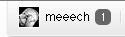

Hello.
You read your github notifications in email, but the badge still haunts the OCD elf in you: 
shush is a simple tool to which will go and mark them all as read (or delete).
gem install github-shush
Usage
Run shush init - this will create the file ~/.github-shush-config.rb. You will need to go and edit that file.
shush : will mark all notifications to as read
shush delete : will delete all UNREAD notifications
shush wipe : will delete ALL notifications
shush is pretty basic - ie: no paginating, so if you have a ton of notifications to delete, you will want to just run it multiple times.
Feedback, forks and comments always welcome.
Background
“wondering if its possible to make gmail tool which deletes message notification on github if you’ve deleted the related email.” tweet
The answer is yes and no. In the end, my use case was satisfied with this gem I can trigger from the cli. You can hook it up to gmail, fairly simply - I will outline how below if you interested in taking it to the next level.
re: gmail connection
Originally, I thought I could make a Component for Gmail that would add a button when it saw the message was a notification from Github. Turns out components are for Gmail for your domain only (I wish that had been clearer :) ). So, the next best solution would be to use chrome/safari extension, or a greasemonkey script.
Basic Imagined Flow:
User Clicks on Archive + Mark as Read on Github >> pings github-shush running on a localhost:9999 >> github-shush then does some subject/text matching, marks the relevant message as read.
Obviously, you could deploy to heroku, but the gem needs your github creds, and I have no interest in making a system where I’m responsible for storing your gh creds. Which is why I figured just running the gem on localhost.
But for me, my itch is scratched.